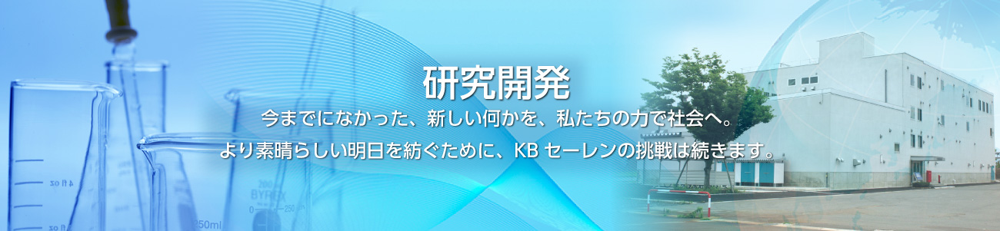

基本方針
企業の研究開発の目的は、市場に無い新しい商品をどこよりも早くお届けすることです。そのためにKBセーレンでは、セーレングループの強みを活かして、市場ニーズを幅広く収集し、自社の独自技術を製品に結び付けるための努力をしています。
当センターにおける研究開発は、溶融紡糸による糸づくりをベースに、その原料となるポリマーの改質から、独創性と高い技術力を誇る複合紡糸技術をメインにオンリーワンのモノづくりを目指しています。
新商品の開発の為には若い力とひらめきが不可欠です。KBセーレンの北陸R&Dセンターでは、入社間もない若手が未来の商品づくりに積極的にかかわっています。
独自技術
-
細繊度技術（分割型）
最小繊維径0.02mmを誇る紡糸技術と、1本の繊維を分割して極細繊維を生み出す技術
-
複合紡糸技術
2種類以上のポリマーを1本の糸に組み合わせて紡糸する技術
-
練り込み技術
導電性や抗菌性など機能性を有する微粒子を繊維中に添加・配合する技術
体制
-
第1研究グループ
繊維化コア技術を、エンプラ樹脂をはじめとした高機能素材に応用することで新たな付加価値を創生する技術開発を行っています。
-
第2研究グループ
生分解性を有した樹脂やリサイクル樹脂、バイオマス樹脂などを用いた環境負荷を低減させる繊維の技術開発を行っています。
-
技術開発グループ
北陸R&Dセンターで産み出した新商品を、北陸合繊工場での量産化に向けてのプロセス及び設計を行っています。
また、品質や生産性を上げるため、自動化・省人化の新設備の導入も行います。 -
評価分析グループ
ポリマーや原糸、生地等の基礎物性の評価や組成・構造解析、含有金属分析や表面・断面分析、新規素材の評価方法の検討、確立を行います。
開発商品
身近なものから未来を支えるものづくり
市場フィールドは衣料はもとより、最先端のテクノロジーを支える、工業製品へと広がっています。
身近な衣料素材にはクールビズのような快適さとエコロジーの両立を実現する製品を。
高機能素材は、透撮を防止したり、紫外線カットなど安心・安全につながる製品を。
スマートフォンやＩＴ技術、海水の淡水化技術など最先端技術を下支えするファイバーテクノロジーを実現すべく、研究に励んでいます。